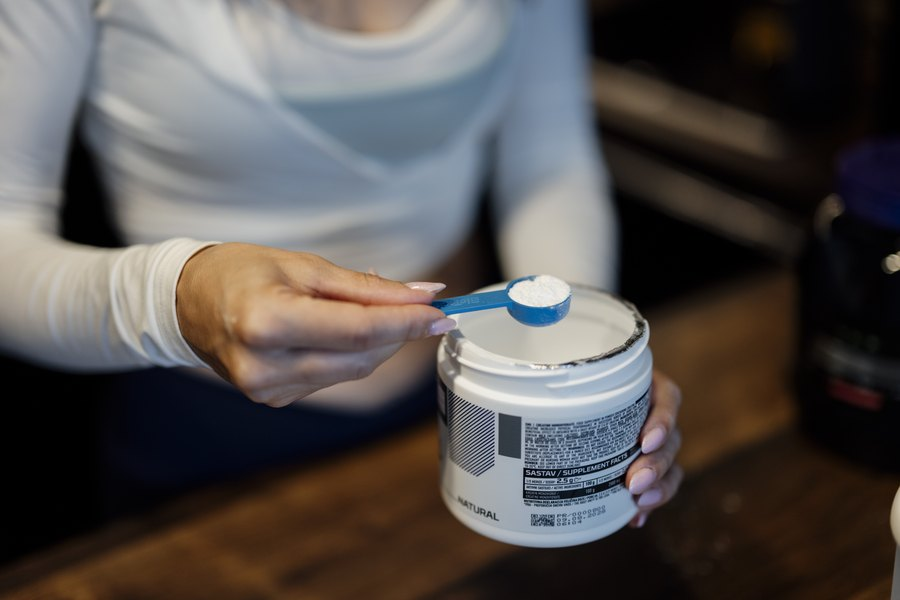

Creatine for Brain Health: Beyond the Gym
Creatine built its reputation on muscle. Quietly, a body of research has been asking a different question: what happens when you fuel the brain the same way? The answer is more compelling than most people expect.

Key takeaways
- The brain runs on a lot of energy, and creatine helps recycle the cell's main energy molecule, ATP.
- Benefits are clearest under stress: sleep deprivation, high mental load, or low baseline stores.
- Vegetarians and older adults may gain the most, since their baseline creatine tends to be lower.
- Creatine monohydrate, 3 to 5 g/day, is the studied, cheap, and safe standard. Fancy forms aren't needed.
- Strong safety record, but people with kidney disease should check with a doctor first.
Ask most people what creatine does and they'll say it helps you lift heavier. That's true, and it's why it became one of the best-selling sports supplements on earth. But muscle isn't the only tissue that burns through energy at a furious rate. Your brain is roughly 2 percent of your body weight and consumes about 20 percent of your energy. Creatine's job is to help cells regenerate ATP, the molecule they spend to do work. It turns out the brain uses that same system. Over the past two decades, researchers have been testing whether topping up brain creatine can sharpen thinking, and the results, while nuanced, are genuinely interesting.
How creatine fuels the brain
Cells store energy in ATP, but they hold only a few seconds' worth at a time. To keep going, they constantly recycle spent ATP back into a usable form. Creatine, stored as phosphocreatine, is the rapid-recharge system for exactly this. In muscle it powers short, explosive effort. In the brain it acts as an energy buffer for neurons during demanding tasks. When mental workload spikes or energy supply is compromised, the brain's creatine system helps hold performance steady. That framing explains the central finding of this research: creatine tends to help most when the brain is energy-stressed, and less when everything is already running smoothly.
Does creatine actually improve memory and thinking?
The honest summary is "sometimes, and it depends on the person and the situation." A frequently cited pattern is that creatine helps cognition under stress. Studies on sleep-deprived participants have found that creatine can partly offset the mental decline that comes with lost sleep, helping with reaction time and some memory tasks. Under normal, well-rested conditions in young healthy adults, benefits are smaller and less consistent. Where the signal gets stronger is in people with lower baseline creatine.
Two groups stand out. Vegetarians and vegans, who get little dietary creatine because it comes mainly from meat and fish, have shown clearer cognitive gains from supplementation in several studies. Older adults, whose stores and brain energy metabolism tend to decline, are another promising group, and research into creatine for healthy aging and even mood is expanding. A 2023 review pulling together the human trials concluded that creatine may improve short-term memory and reasoning, with the effect most reliable in stressed or depleted individuals. The picture is promising, but this is still an evolving field, not settled science.
COMPLEX
The memory formula we rate highest in 2026
Creatine targets brain energy. For the acetylcholine and neuron-membrane side of memory, Advanced Memory Complex pairs citicoline, bacopa, and phosphatidylserine in one daily formula.
See Today's Price →Who is most likely to notice a difference?
If you eat meat regularly, sleep well, and are young, creatine may do little for your day-to-day thinking, though it still helps your training. The people most likely to feel a cognitive benefit are the ones starting from a lower baseline or facing an energy challenge. That includes vegetarians and vegans, older adults, people going through periods of poor sleep, and anyone under sustained heavy mental load. This is a useful way to set expectations. Creatine is not a stimulant and won't give you a jolt like caffeine. Its effect, when present, is more like removing a ceiling on performance when your brain is taxed. For the stimulant side of focus, our article on caffeine and memory covers a different mechanism entirely.
Dosage: keep it simple
The research standard is creatine monohydrate at 3 to 5 grams per day. It's the most studied form by a wide margin, it's inexpensive, and it works. You do not need the pricier "advanced" versions marketed as superior, as they rarely outperform plain monohydrate in head-to-head studies. Because the brain absorbs creatine more slowly than muscle, some cognitive studies have used higher doses or longer timeframes to saturate brain stores, so patience helps. A loading phase is optional and mainly speeds up muscle saturation. For steady daily use, a consistent 5 grams is the simple, evidence-based choice. Take it whenever you'll remember it. Timing has little effect on the brain benefits.
Safety and precautions
Creatine monohydrate has one of the best safety profiles in all of supplement research, studied for decades in thousands of people. In healthy adults, the main side effects are mild: a little water retention early on, and occasionally some stomach upset if you take a large dose at once. The persistent myth that creatine harms the kidneys in healthy people has not held up in the research. That said, creatine is cleared by the kidneys, so anyone with existing kidney disease, or taking medications that affect kidney function, should talk to a doctor before starting. The same goes for pregnancy and breastfeeding, where data is limited. Stay well hydrated, and buy a product that carries third-party testing for purity.
Where creatine fits in a brain-health plan
Creatine is one of the more evidence-backed supplements you can add for cognition, especially if you're vegetarian, older, or frequently short on sleep. It is still a supporting player, not a foundation. The things that move memory most are the unglamorous ones: consistent sleep, regular exercise, managing blood pressure and blood sugar, and staying mentally and socially engaged. Creatine can sit on top of that base, not replace it. For the full evidence-based approach, start with our pillar guide on how to improve your memory. If you're comparing options, our roundup of the best memory supplements of 2026 lays out which ingredients have the strongest human data, and our guide to the best supplements for studying is worth a look if focus under pressure is your goal. Check with your doctor before adding anything new.
Frequently asked questions
Does creatine improve brain function?
Creatine supports the brain's energy supply, and research suggests it can help cognition most when the brain is under stress, such as sleep deprivation or intense mental effort. Benefits in well-rested, well-fed people are smaller and less consistent. Some evidence points to bigger gains in vegetarians and older adults, whose baseline creatine stores tend to be lower.
How much creatine should I take for the brain?
Most research uses creatine monohydrate at 3 to 5 grams per day, the same dose used for muscle. Some brain studies have tested higher amounts, since the brain takes up creatine more slowly than muscle. Creatine monohydrate is the most studied and affordable form. There is no need for fancy versions. Consistency matters more than timing.
Is creatine safe to take daily?
For healthy adults, creatine monohydrate has one of the strongest safety records of any supplement, with decades of study at typical doses. The most common side effect is minor water retention or, occasionally, stomach upset. People with kidney disease or those on medication should consult a doctor first, since creatine is processed by the kidneys.
Do vegetarians benefit more from creatine?
Likely yes, for cognition. Dietary creatine comes mainly from meat and fish, so vegetarians and vegans tend to have lower baseline stores in muscle and brain. Several studies found that the cognitive benefits of creatine supplementation were more pronounced in vegetarians, presumably because they had more room to top up.
Want to cover more of the memory picture?
Creatine handles brain energy. See the memory formulas our editors rate highest for 2026, built to support focus and recall from other angles.
See the Top 5 Memory Formulas →Related: Best supplements for studying · Caffeine and memory · Citicoline for memory · Best memory formulas of 2026